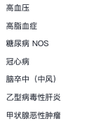
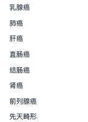
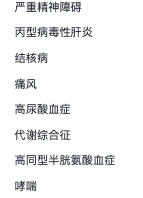
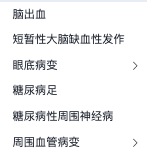
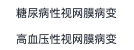
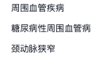
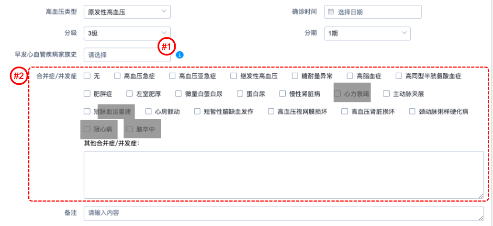

#2
现有疾病：
【思路】展示所有可维护的疾病，分类成：现有疾病、并发症/合并症、既往史、家族史 （这个分类要樊雪团队认可）然后根据档案做二次过滤；
1、增加分类“脑血管病病史”，选项包括：脑卒中、短暂脑缺血发作，可多选
2、增加分类“冠心病病史”，选项包括：心绞痛、心肌梗死、冠脉重建，心力衰竭，可多选
3、增加分类“外周血管疾病”，选项包括：周围血管疾病、糖尿病性周围血管病、颈动脉狭窄
4、增加分类“肾脏病史”，选项包括：糖尿病肾病，肾功能受损，可多选
5、增加分类“糖尿病”，选项包括“糖尿病”
6、已存在的选项需要再分类，和下图怎么结合
既往史中增加：
需要确认：既往史中的疾病，算不算高血压的影响因素中的“伴临床疾患”？
合并症/并发症
脑血管病
冠心病
肾脏病
糖尿病
外周血管疾病
#1

一级亲属(父母、子女以及兄弟姐妹)发病年龄男性<55岁，女性<65岁，即为“有”






*这套和家族史是并用的，是否存在通用的可能？疾病库？
